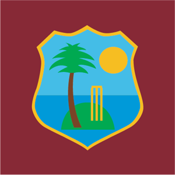
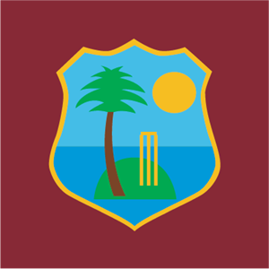

Welcome Page
What is Cricket?
Cricket is the second most popular sport in the world, behind only Soccer. The game is played by men and women around the world and watches by an even greater audience. Cricket is governed by the International Cricket Council (ICC). Cricket's Marquee event is the ICC Cricket World Cup. The ICC facilitates the games laws and each country's membership level. The two categories of memberships are Permanent and Associate Members.
- Permanent Members
❮
❯
- Associate Members
The Future Holds Hope
Cricket is not a very popular sport in America. Yet we can hope it becomes as mainstream as possible. Here are some reasons why interest in the sport is rising fast:
- With New York City as the melting pot that it is, the continuous-growing diverse population is allowing for more people from around the world to share their love of the sport.
- The rise of the shortest format, T20 Cricket, is attracting many younger fan from non-traditional cricketing nations.
- Cricket may be on the Summer Olympics very soon.
- The partial resemblance to baseball will be a key factor in capturing the interest of many baseball fans.
While the future holds exciting times for cricket enthusiasts ahead, enjoy this that captures the simple aspects of the beautiful sport.


 
